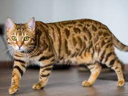
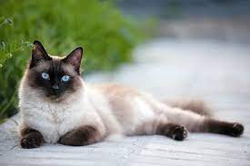
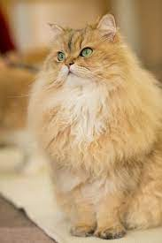
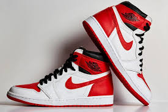
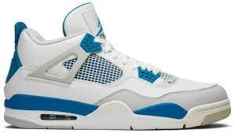
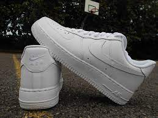
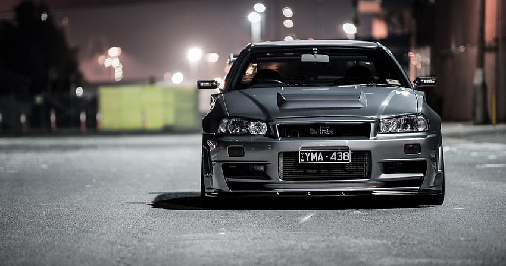
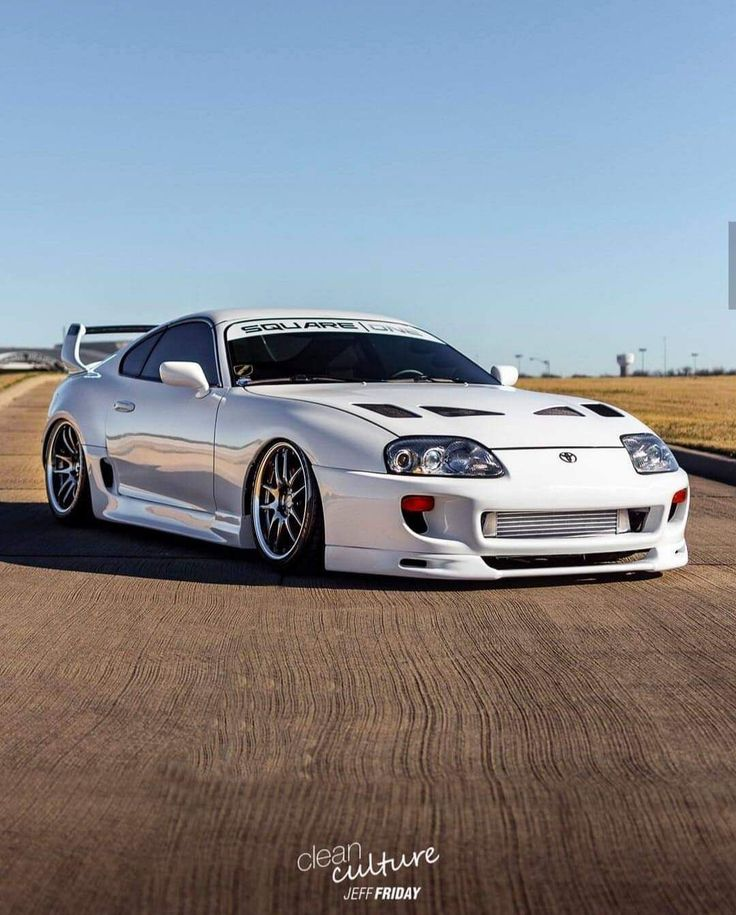

El gato de Bengala o gato bengalí es un híbrido que nace entre el cruce un gato doméstico y un gato leopardo (felino asiático que aún se encuentra en estado salvaje), por ese motivo muchas personas se preguntan hoy en día si el gato de Bengala es un felino salvaje.
Si estás buscando un gato bengalí en adopción y tienes dudas acerca de su carácter, tamaño o salud, has llegado al sitio adecuado, en esta ficha de razas de gatos de ExpertoAnimal te explicaremos todo lo que necesitas saber sobre la raza de gato de Bengala o gato bengalí.
El gato siamés es un gato de tamaño mediano y cuerpo largo y flexible, que es grácil y elegante pero sin perder su aspecto musculoso. El cuerpo es equilibrado y atlético, las patas son esbeltas y las zarpas, pequeñas y ovaladas. Desde arriba, la cabeza recuerda a un triángulo que se estrecha en líneas rectas y termina en un hocico delgado. Las orejas son grandes y erguidas y están situadas de tal modo que siguen las líneas del triángulo
El persa es una raza de gato caracterizada por tener una cara ancha y plana y un gran abundante pelaje de variados colores. Son considerados comúnmente como gatos aristocráticos (el 75% de los gatos de pedigree registrados son persas). Los primeros gatos persas fueron introducidos en Italia desde Persia (actualmente Irán, Tayikistán y Afganistán) en la década de 1620 y a sus descendientes se les llamó de muchas maneras
Como podrás imaginar, al final consiguieron convencerle para crear una línea de zapatillas propia. Las Nike Air Jordan 1 se pusieron a la venta de forma oficial en 1985 y serían las primeras de muchas. Llegaron con un diseño high top muy propio del calzado de baloncesto, es decir, con una caña alta que cubriera el tobillo. También destacaba el logo Swoosh de Nike en el lateral y el primero de los logos de Air Jordan compuesto por un balón de baloncesto con alas. No sería hasta 1987 cuando Nike presentó el famoso logo Jumpman, que consistía en la propia silueta de Michael Jordan saltando por los aires a punto de marcar un mate. Es por eso que la línea Retro de las Air Jordan 1 no están decoradas con este logo, ya que apareció años después.
Los Air Jordan 4 son, ciento por ciento, el calzado de gala street más perfecto que puede habitar en tu armario. Claramente, sus hermanos mayores —aquellos modelos que iniciaron la familia del Jumpman, desde el original de 1985 hasta su tercera iteración con el diseño de Tinker Hatfield— son también unos favoritos clave y monumentos inescrutables en el museo global del sneaker. Sin embargo, hay algo imponente y mágico en los AJ4 que les convierte uno de los tenis más emblemáticos en toda la historia de este label.
Los Nike Air force 1 (abreviados AF1) han tenido el mismo estilo parecido durante 25 años con cambios mínimos. El nombre es una referencia al avión Air Force One, el cual es el que se encarga de transportar al presidente de los Estados Unidos de América. Este calzado se encuentra en tres estilos diferentes: El estilo low-top, el mid-top, y el high-top (siendo este último el estilo original). Su clasificación se basa en la altura de calzado de la parte trasera y la lengüeta, además este zapato viene en diferentes formas, colores, patrones e inclusive hasta texturas. Los dos estilos más comunes del AF1 son los de color totalmente blanco, usado principalmente en la industria de la música, y los de color totalmente negro.
El Nissan Skyline GT-R R34 nació en 1998 y es uno de los más recordados por su participación en varias películas de renombre. La carrocería tomaba un nuevo diseño más aerodinámico y tenía una distancia entre ejes más corta. Con esa fórmula y, de nuevo, con el motor biturbo RB26DETT, se convirtió en un rival a batir. Montó una nueva caja de cambios manual de Getrag con seis velocidades y también hubo opción al motor RB28DETT Z-Tune. Fue el último de una saga irrepetible, aunque la historia no terminaría ahí.
Hay pocos coches en la historia reciente del automóvil que tengan su legión de fans pero el Toyota Supra es uno de ellos. Y eso es algo destacable cuando se habla de un coche que comenzó siendo una versión más de otro coche: en este caso, del Toyota Celica. El Supra empezó abajo en el escalón de los deportivos y fue subiendo peldaños hasta ser un modelo propio y un modelo de culto, por una serie de razones, hasta llegar a la generación actual: el Toyota GR Supra.
Debutó en 19641 como modelo 1964½ con un precio de US$2368 ($20 690 en 2024), cuyas ventas anuales estaban estimadas en alrededor de 100 000 unidades. Las ventas del primer año superaron las 400 000 unidades y fueron de un millón en dos años. El Mustang creó la clase de Autos Pony estadounidenses, distinguidos como cupés deportivos accesibles con capotas largas y cubiertas traseras cortas, y dio lugar a competidores como el Chevrolet Camaro, Pontiac Firebird, AMC Javelin, Dodge Charger, Plymouth Barracuda renovado de Chrysler y la segunda generación del Dodge Challenger. El Mustang también es acreditado por inspirar los diseños de cupés Toyota Celica y el Ford Capri, que fueron importados a los Estados Unidos.